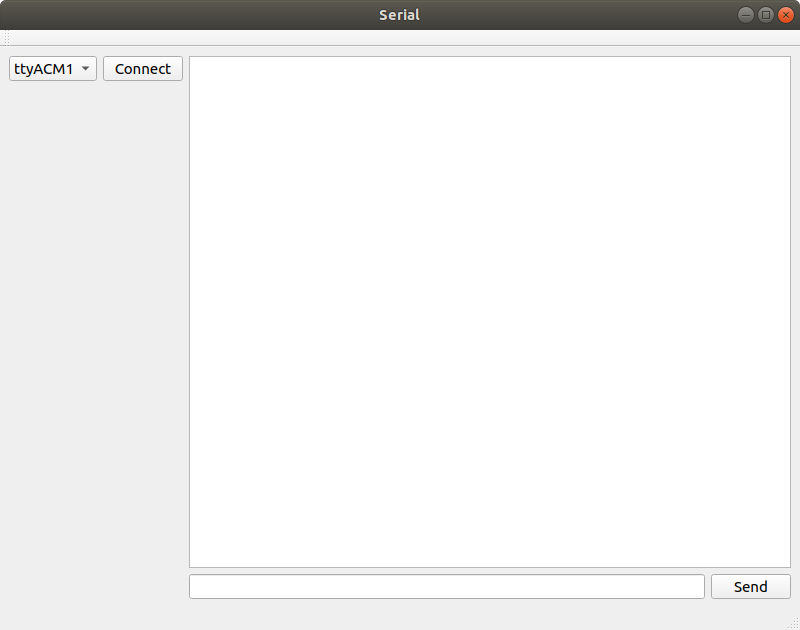
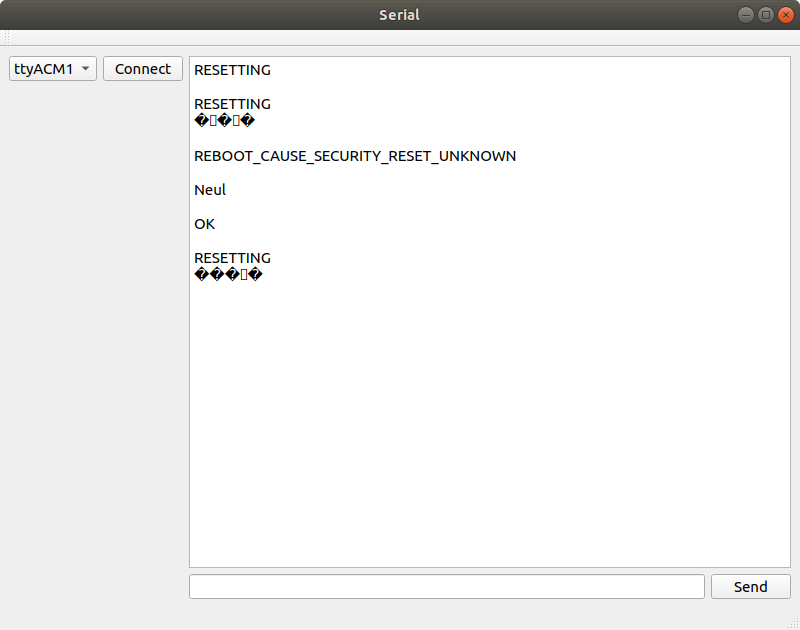

When working with a development board such as the STM32F4-Discovery, it is very nice to be able to set up some serial com over the USB. This can be used to provide a lot more information than you would be able to by just blinking LEDs (well, you could communicate one way board-to-human by encoding for example Morse-code). Anyway! its nice to have a serial com link!
But after a while of using just miniterm or screen as a serial terminal it may get a bit tedious and annoying. So this text is about the basics of setting up a GUI using QT for serial communication with for example a development board. The program can be extended with domain specific functionality in the form of additional buttons and such, whatever you desire.
The GUI has been designed in the Qt GUI Designer within Qt Creator and looks like the picture below.

On the left hand side there is a QComboBox that will list the available serial ports on the system. Next to this combo box is a pushButton with the string "connect" on it. This button is used to establish a connection to the serial port selected in the combo box. This connecting procedure is implemented in the button's clicked slot.
The right side of the GUI consists of a QTextBrowser that will display data arriving from the serial port. Below the text browser is a QLineEdit and a send button. Connections will also be made so that the return key when pressed with focus on the line edit, will issue the send.
There is not a lot of code involved in this, which is good since it is a pretty basic program. So, all of it is implemented within mainwindow.h and mainwindow.cpp.
The mainwindow.h file includes the following in addition to the QMainWindow:
QSerialPort to establish a connection to a port and read and write over that port. QSerialPortInfo is used to query the system for available serial ports which provides their name and location (in the Linux filesystem hierarchy). QTimer will be used to set up a periodic timer that updates the list of serial ports. Serial ports pop into existence when devices are plugged in.
The MainWindow class holds a bit of state in its member variables shown below. These consist of the QSerialPort we are going to use, the list of serial ports (QSerialPortInfo objects) and our timer.
Those members above will be initialized in the constructor shown later in this text.
There are also a bunch of slots and one member function declared in this class.
private slots:
void on_connectPushButton_clicked();
void on_sendPushButton_clicked();
void serialReadyRead();
private:
void updateSerialPorts();The implementation of all of these will be shown later in the text.
Below you find mainwindow.h in its entirety:
ifndef MAINWINDOW_H
#define MAINWINDOW_H
#include <QMainWindow>
#include <QSerialPort>
#include <QSerialPortInfo>
#include <QTimer>
QT_BEGIN_NAMESPACE
namespace Ui { class MainWindow; }
QT_END_NAMESPACE
class MainWindow : public QMainWindow
{
Q_OBJECT
public:
MainWindow(QWidget *parent = nullptr);
~MainWindow();
private slots:
void on_connectPushButton_clicked();
void on_sendPushButton_clicked();
void serialReadyRead();
private:
Ui::MainWindow *ui;
QSerialPort *mSerial;
QList<QSerialPortInfo> mSerialPorts;
QTimer *mSerialScanTimer;
void updateSerialPorts();
};
#endif // MAINWINDOW_HNow, let us jump over the mainwindow.cpp file and go through that code. Starting with the constructor for the MainWindow object.
MainWindow::MainWindow(QWidget *parent)
: QMainWindow(parent)
, ui(new Ui::MainWindow)
{
ui->setupUi(this);
this->setWindowTitle("Serial");
mSerial = new QSerialPort(this);
updateSerialPorts();
mSerialScanTimer = new QTimer(this);
mSerialScanTimer->setInterval(5000);
mSerialScanTimer->start();
connect(mSerialScanTimer, &QTimer::timeout,
this, &MainWindow::updateSerialPorts);
connect(ui->inputLineEdit, &QLineEdit::returnPressed,
this, &MainWindow::on_sendPushButton_clicked);
connect(mSerial, &QSerialPort::readyRead,
this, &MainWindow::serialReadyRead);
}In the constructor a QSerialPort object is created and, mSerial is initialized. Then a function is called that updates the list of serial ports for the combo box. Nothing very fancy so, will show the contents of updateSerialPorts in a moment.
The timer is initialized and set to a 5 seconds interval.
Lastly, a bunch of connections are set up. The first of these connects the updateSerialPorts function to the timeout signal. It doesn't matter that updateSerialPorts isn't declared as a slot, it seems. The readyRead signal is also connected to a slot that will take care of reading the available data. To get the return key to act the same way as the send button, the returnPressed signal of the line edit widget is connected to the same slot as the send button.
That was the constructor. There is destructor as well but it is unchanged from the template provided when creating the project.
The updateSerialPorts function updates the list of serial ports by asking for the availablePorts. The combo box is cleared to then be refilled with the list of ports. The addItem method in the QComboBox takes two arguments, the first is a string and the second is a QVariant. In this case what we provide for second argument is another string, so this is fine as a QVariant it seems. However, when we access the data field of the combo box, we must convert it from a QVariant to a string before use.
void MainWindow::updateSerialPorts()
{
mSerialPorts = QSerialPortInfo::availablePorts();
ui->serialComboBox->clear();
for (QSerialPortInfo port : mSerialPorts) {
ui->serialComboBox->addItem(port.portName(), port.systemLocation());
}
}The combo box contents is accessed when the connect button is pressed. The selected item of the combo box is then read out. We only need to read out the data field from the combo box. The data is not actually displayed in the combo box, only the name is. When we added items to the combo box we put the name of the port as the first (or text) argument to addItem which is what is displayed in the list. The data from the combo box iten is converted from QVariant to string using toString().
If the program is already connected to a serial port when the user clicks connect, the connection is closed.
Now we are ready to set up the serial connection parameters and open the connection.
Now one idea could be to add more GUI elements where the user can fill in the parameters. If that had been the case, we could load the information from those GUI elements at this time and use them to set up the connection.
The whole contents of this method is wrapped in calls that disable the connection to grey it out while the computer is working on setting up a connection. This will make it harder to accidently queue up several of these connect events.
void MainWindow::on_connectPushButton_clicked()
{
ui->connectPushButton->setEnabled(false);
QString serialLoc = ui->serialComboBox->currentData().toString();
if (mSerial->isOpen()) {
qDebug() << "Serial already connected, disconnecting!";
mSerial->close();
}
mSerial->setPortName(serialLoc);
mSerial->setBaudRate(QSerialPort::Baud115200);
mSerial->setDataBits(QSerialPort::Data8);
mSerial->setParity(QSerialPort::NoParity);
mSerial->setStopBits(QSerialPort::OneStop);
mSerial->setFlowControl(QSerialPort::NoFlowControl);
if(mSerial->open(QIODevice::ReadWrite)) {
qDebug() << "SERIAL: OK!";
} else {
qDebug() << "SERIAL: ERROR!";
}
ui->connectPushButton->setEnabled(true);
}When the send button is clicked or the user presses return (while the focus is on the QLineWidget GUI element) the following code is executed.
void MainWindow::on_sendPushButton_clicked()
{
if (mSerial->isOpen()) {
QString str= ui->inputLineEdit->text();
ui->inputLineEdit->clear();
str.append("\r\n");
mSerial->write(str.toLocal8Bit());
} else {
qDebug() << "Serial port not connected!";
}
}If the serial is connected, then a string is created from the contents of the QLineEdit. A carriage return and newline character is appended to the string which is then sent through the serial port. The string is converted to a raw 8 bit data before transmission.
The last method is for reading of data from the serial port. This takes place whenever the signal readyRead is raised from the QSerialPort.
oid MainWindow::serialReadyRead()
{
QByteArray data = mSerial->readAll();
QString str = QString(data);
ui->outputTextBrowser->insertPlainText(str);
QScrollBar *sb = ui->outputTextBrowser->verticalScrollBar();
sb->setValue(sb->maximum());
}All the data that is avaialable from the serial port is read, with readAll() as an array of raw bytes. The bytes are then converted into a string and displayed onto the QTextBrowser widget.
Once a QTextBrowser has enough text in it, it grows a scrollbar. The final two lines of code there, scrolls to the end of the QTextBrowser so that it is automatically advanced to show the newly added text.
Below you find the mainwindow.cpp file in its entirety:
#include "mainwindow.h"
#include "ui_mainwindow.h"
#include <QDebug>
#include <QScrollBar>
MainWindow::MainWindow(QWidget *parent)
: QMainWindow(parent)
, ui(new Ui::MainWindow)
{
ui->setupUi(this);
this->setWindowTitle("Serial");
mSerial = new QSerialPort(this);
updateSerialPorts();
mSerialScanTimer = new QTimer(this);
mSerialScanTimer->setInterval(5000);
mSerialScanTimer->start();
connect(mSerialScanTimer, &QTimer::timeout,
this, &MainWindow::updateSerialPorts);
connect(ui->inputLineEdit, &QLineEdit::returnPressed,
this, &MainWindow::on_sendPushButton_clicked);
connect(mSerial, &QSerialPort::readyRead,
this, &MainWindow::serialReadyRead);
}
MainWindow::~MainWindow()
{
delete ui;
}
void MainWindow::updateSerialPorts()
{
mSerialPorts = QSerialPortInfo::availablePorts();
ui->serialComboBox->clear();
for (QSerialPortInfo port : mSerialPorts) {
ui->serialComboBox->addItem(port.portName(), port.systemLocation());
}
}
void MainWindow::on_connectPushButton_clicked()
{
ui->connectPushButton->setEnabled(false);
QString serialName = ui->serialComboBox->currentText();
QString serialLoc = ui->serialComboBox->currentData().toString();
if (mSerial->isOpen()) {
qDebug() << "Serial already connected, disconnecting!";
mSerial->close();
}
mSerial->setPortName(serialLoc);
mSerial->setBaudRate(QSerialPort::Baud115200);
mSerial->setDataBits(QSerialPort::Data8);
mSerial->setParity(QSerialPort::NoParity);
mSerial->setStopBits(QSerialPort::OneStop);
mSerial->setFlowControl(QSerialPort::NoFlowControl);
if(mSerial->open(QIODevice::ReadWrite)) {
qDebug() << "SERIAL: OK!";
} else {
qDebug() << "SERIAL: ERROR!";
}
ui->connectPushButton->setEnabled(true);
}
void MainWindow::on_sendPushButton_clicked()
{
if (mSerial->isOpen()) {
QString str= ui->inputLineEdit->text();
ui->inputLineEdit->clear();
str.append("\r\n");
mSerial->write(str.toLocal8Bit());
} else {
qDebug() << "Serial port not connected!";
}
}
void MainWindow::serialReadyRead()
{
QByteArray data = mSerial ->readAll();
QString str = QString(data);
ui->outputTextBrowser->insertPlainText(str);
QScrollBar *sb = ui->outputTextBrowser->verticalScrollBar();
sb->setValue(sb->maximum());
}This program could serve as a base for more complicated interaction with a development board. Instead of repetitively type in long text strings add a button that performs that interaction. Another idea would be to add a history of typed in commands and some method of quickly bringing up a previously entered command.

The picture below shows the setup that is connected to the serial port when the screenshot above was taken. The involved components are an STM32F4-Discovery, and a Dragino NB-IoT Bee module on a arduino shield.
The software running on the STM32F4-Discovery board is implemented using ChibiOs and it sets up a serial-over-usb connection to my laptop and a Uart connection to the NB-IoT module. The STM32 software then executes commands against the IoT module and performs resets on it. I am currently trying to figure out how this NB-IoT module works, so I thought that it would be nice to start on a GUI rather than keep doing textual interactions over miniterm. One thing to add to the GUI would be buttons for various kinds of AT commands that are a pain to type out manually.
© Copyright 2020 Bo Joel Svensson
This page was generated using Pandoc.